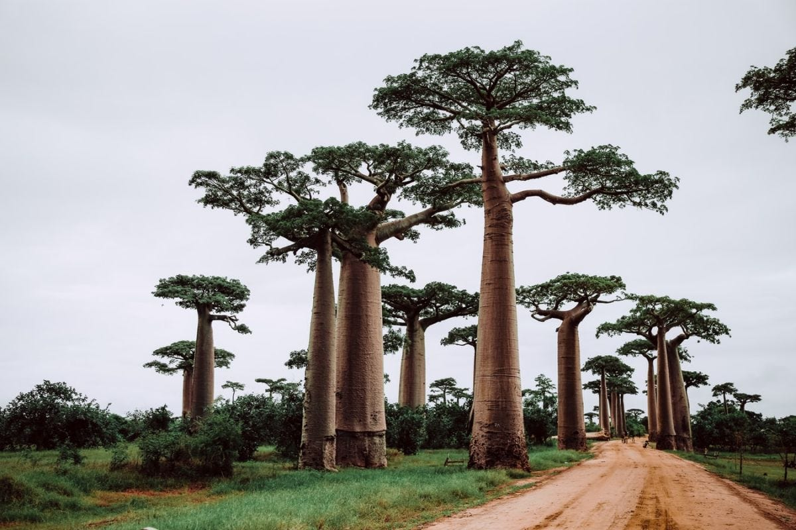

The next African Digital Currency
GOOY is simply a Good currency for buying and selling Goods


Heard the last time on Equity podcast that fintech is of concern in the African continent and I don't need to go into the metrics about access to financial services and the need for investment in financial infrastructure. While in our today connected world financial transactions are traveling through fiber and wave, the need for infrastructure is no longer a barrier to entry and I could not hide that ventures like Mpesos and Telecom operators’ digital wallets among other initiatives like Wave are emerging as mean of doing commerce.
But my dream is this next African currency completely built on top of these innovative network infrastructure that African young men and women are using for WhatsApp and other social media platforms. I dream about this growing continent-wide currency simply usable by people of any age, culture, and level of education. This next African currency will ignite the adoption of e-commerce by African people who if I take the speech of the guest of Equity podcast as granted are fearing online transactions because they culturally don't accept to pay for something they had not touched with their hands before the purchase.
In 2011 I had the idea to build a currency usable in an e-commerce platform with which each transaction is associated with a saving transaction in a way that each time someone by a product she is investing at the same time a part of that money that will grow at a fixed rate. This was for sure a crazy idea for a developing country because it was already like that for the developed ones. Apple recently implemented this idea with apple Card and a joint venture with Goldman Sachts.
Today I am still dreaming about this ever-growing next African currency with which each transaction is tied to saving transactions in a way that people will make money in the future by making transactions today. Gooy is the name I thought this currency could take because GOOY means baobab which is a tree that means longevity, growth, and power in almost all African cultures.
This Next African Digital currency should be open to other countries and investors of the world connected African economy to other local and global economies forever because this world we are living in is about connection and cooperation between countries and organizations eased by the openness of economic systems.
I hope that High tech companies like Apple, Microsoft, Amazon, and Google whose name is very close to the name of this tech-enabled idea of a digital currency for Africa will participate in the implementation of this currency like those organizations which are working with Facebook for implementing a digital currency operated by this social media platform.
If it really benefits Young African men and women I hope also that
could be integrated into this next African digital Currency and that all Data-Driven investors will be able to invest and benefit from it wherever they live and work.